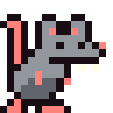

Hey, I'm Kob, the witty, charming, and most handsome dev on the team (according to my girlfriend).
I'm the lead animations expert for our team. My focus is creating something visually sparking and unique for our games. I'm a sucker for all things pixel art, and only recently began my art journey.

In 2022, I was working with hutner, when we both randomly decided to join the Harvard CS50 course. We both figured we would give coding a try, as we had nothing better to do. The first assignment was to create a game in scratch. I remember I spent 3 days straight working on my game "Hopper's Quest". This was my first introduction to not only programming, but game development.
Eventually, I signed up for classes at a community college, and downloaded GameMakerStudio to make more games. I put a lot of effort into two games, "Hop and Scotch" and "Starshot".
A co-op puzzle platformer. The first game I tried to make in GameMakerStudio. I remember watchig a lot of tutorial videos, and generally just trying to learn the engine. I wasn't entirley sold on the concept, I more-so was creating this game as proof to myself that I could actually work and make a game. I never got past making the second level of the game
The game I've definitley spent the most time on, and the game I still have every desire to finish. It was inspired by the small pixels of Risk of Rain, with the challenge of dodging little space creatures with a boss at the end. I've always enjoyed a "goal" instead of an endless onslaught of enemies, so I wanted ramping waves until wave 10, where there would be a final boss that would drop a unique weapon.
As any developer on youtube will tell you, scope creep is the killer of many games, and Starshot was no different. I wanted so many things in Starshot, that I eventually felt overwhelmed and stopped production. It originally started on GameMakerStudio, but I eventually made the switch over to Godot when I heard about it. The game is back to a working state on godot, and I've set clear goal of how I want the game to be. Once I finish working on and release Forgotten Paths, I plan on focusing on finishing Starshot and releasing that on Steam as well.

I can't exactly remember who did, but either Hunter or I urged the other to join the Game Makers Tool Kit Game Jam that was coming up. Before that came up, we both decided to join the Kenney Jam, which thankfully we did, because that really defined our strengths for the real thing.
Solar charged was a great stepping stone, but Forgotten Paths is something I find special. I wasn't fully on board with a puzzle game, but once we started getting the ball rolling, I found it very fun to set up a puzzle and watch Hunter try to solve it.
We both knew Forgotten Paths had potential for a full release on Steam, so we decided it was time to stop talking about doing it and actually create the full game. Neither of us expect the game to be a top seller, but it will feel like such an accomplishment to actually release a game that we both feel is fun.
Ok, it's 1:20 am, I have work in 5 hours, I'm gonna go to bed, probably revise this later. Goodnight!





 itch
itch